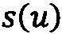
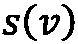

第六章:社交网络图
社交网站的增长是近年来数字媒体中最活跃的趋势之一。自 20 世纪 90 年代末第一批社交应用发布以来，它们已经吸引了全球数十亿活跃用户，其中许多人已经将数字社交融入了他们的日常生活。脸书、Twitter 和 Instagram 等社交网络正在推动新的沟通方式。用户可以分享想法，发布更新和反馈，或参加活动和事件，同时在社交网站上分享他们更广泛的兴趣。
此外，社交网络为研究用户行为、解释人们之间的互动和预测他们的兴趣提供了巨大的信息源。将它们组织成图，其中一个顶点对应一个人，一条边代表两者之间的联系，这使得一个强大的工具能够提取有用的知识。
然而，由于大量可变参数，理解驱动社交网络进化的动力学是一个复杂的问题。
在本章中，我们将讨论如何使用图论分析脸书社交网络，以及如何使用机器学习解决有用的问题，如链接预测和社区检测。
本章将涵盖以下主题:
- 数据集概述
- 网络拓扑和社区检测
- 监督和非监督任务的嵌入
技术要求
我们将使用 Jupyter 笔记本和 Python 3.8 进行所有练习。以下是本章使用pip需要安装的 Python 库列表。例如，在命令行上运行pip install networkx==2.5:
Jupyter==1.0.0 networkx==2.5 scikit-learn==0.24.0 numpy==1.19.2 node2vec==0.3.3 tensorflow==2.4.1 stellargraph==1.2.1 communities==2.2.0 git+https://github.com/palash1992/GEM.git
在本章的其余部分，如果没有明确说明，我们将把nx、pd和np称为以下 Python 命令的结果:import networkx称为nx、import pandas称为pd、import numpy称为np。
与本章相关的所有代码文件都可以在https://github . com/packt publishing/Graph-Machine-Learning/tree/main/chapter 06获得。
数据集概述
我们将使用来自斯坦福大学的社交圈子快照脸书公共数据集(https://snap.stanford.edu/data/ego-Facebook.html)。
数据集是通过从调查参与者那里收集脸书用户信息而创建的。Ego 网络由 10 个用户创建。每个用户被要求识别他们的朋友所属的所有圈子(朋友列表)。平均而言，每个用户在他们的自我网络中确定了 19 个圈子，每个圈子平均有 22 个朋友。
为每个用户收集了以下信息:
- 边:如果两个用户是脸书上的朋友，则存在一条边。
1如果用户在其个人资料中有此属性，否则为0。要素已被匿名化，因为要素的名称会泄露私人数据。
然后，10 个自我网络被统一到我们将要研究的一张图中。
数据集下载
可以使用以下 URL 检索数据集:https://snap.stanford.edu/data/ego-Facebook.html。具体来说，可以下载三个文件:facebook.tar.gz、facebook_combined.txt.gz和readme-Ego.txt。让我们分别检查每个文件:
facebook.tar.gz: This is an archive containing four files for eachnodeId.extensionwherenodeIdis the node ID of the ego user andextensionis eitheredges,circles,feat,egofeat, orfeatnames. The following provides more details:a.
nodeId.edges:包含nodeId节点网络的边列表。b.
nodeId.circles:包含几行(每个圆一行)。每一行都由一个名称(圆圈名称)后跟一系列节点 id 组成。c.
nodeId.feat:包含 ego 网络中每个节点的特征(如果nodeId具有该特征，则为0，否则为1)。d.
nodeId.egofeat:包含 ego 用户的特性。e.
nodeId.featname:包含特征的名称。facebook_combined.txt.gz:这是一个包含单个文件facebook_combined.txt的档案，它是来自所有 ego 网络组合的边的列表。readme-Ego.txt:包含了之前提到的文件的描述。
自己看看那些文件。强烈建议在开始任何机器学习任务之前，探索并尽可能熟悉数据集。
使用 networkx 加载数据集
我们分析的第一步是使用networkx加载聚合的 ego 网络。正如我们在前面的章节中所看到的，networkx对于图形分析来说是强大的，并且考虑到数据集的大小，它将是我们在本章中将要进行的分析的完美工具。然而，对于具有数十亿个节点和边的大型社交网络图，可能需要更具体的工具来加载和处理它们。我们将在 第 9 章 、构建数据驱动的图驱动应用中介绍用于扩展分析的工具和技术。
正如我们已经看到的，组合的自我网络被表示为边的列表。我们可以使用networkx从边列表中创建一个无向图，如下所示:
G = nx.read_edgelist("facebook_combined.txt", create_using=nx.Graph(), nodetype=int)
让我们打印一些关于图表的基本信息:
print(nx.info(G))
输出应该如下所示:
Name: Type: Graph Number of nodes: 4039 Number of edges: 88234 Average degree: 43.6910
正如我们所见，聚合网络包含4039节点和88234边。这是一个相当连通的网络，其边数是节点数的 20 倍以上。事实上，聚合网络中应该存在几个集群(很可能是每个 ego 用户的小世界)。
绘制网络也将有助于更好地理解我们将要分析的内容。我们可以使用networkx绘制如下图表:
nx.draw_networkx(G, pos=spring_pos, with_labels=False, node_size=35)
输出应该如下所示:
图 6.1–聚合的脸书自我网络
我们可以观察到高度互联的枢纽的存在。从社会网络分析的角度来看，这很有趣，因为它们可能是潜在社会机制的结果，可以进一步研究这些机制，以更好地理解个人与其世界的关系结构。
在继续我们的分析之前，让我们保存网络内部 ego 用户节点的 id。我们可以从包含在facebook.tar.gz档案中的文件中检索它们。
首先，打开归档文件。提取的文件夹将被命名为facebook。让我们运行以下 Python 代码，通过获取每个文件名的第一部分来检索 id:
ego_nodes = set([int(name.split('.')[0]) for name in os.listdir("facebook/")])
我们现在准备好分析图表。特别是，在下一节中，我们将通过检查图形的属性来更好地理解图形的结构。这将有助于我们更清楚地了解它的拓扑结构及其相关特征。
网络拓扑和社区检测
理解网络的拓扑结构以及节点的角色是分析社交网络的关键步骤。重要的是要记住，在这个上下文中，节点实际上是用户，每个节点都有自己的兴趣、习惯和行为。这些知识在进行预测和/或发现洞见时非常有用。
我们将使用networkx来计算我们在 第 1 章 、图表入门中看到的大多数有用指标。我们将尝试给他们一个解释，以收集对图表的洞察力。让我们像往常一样开始，通过导入所需的库并定义我们将在整个代码中使用的一些变量:
import os import math import numpy as np import networkx as nx import matplotlib.pyplot as plt default_edge_color = 'gray' default_node_color = '#407cc9' enhanced_node_color = '#f5b042' enhanced_edge_color = '#cc2f04'
我们现在可以开始分析了。
拓扑概述
正如我们之前已经看到的，我们的组合网络有 4039 个节点和 80000 多条边。我们要计算的下一个指标是分类度。它将揭示关于用户与具有相似程度的用户联系的趋势的信息。我们可以这样做:
assortativity = nx.degree_pearson_correlation_coefficient(G)
输出应该如下所示:
0.06357722918564912
在这里，我们可以观察到一个正的匹配度，很可能表明良好连接的个体与其他良好连接的个体相关联(正如我们在 第 1 章 、图表入门中所看到的)。这是意料之中的，因为在每个圈子内部，用户可能倾向于彼此高度关联。
及物性也有助于更好地理解个体之间的联系。回忆传递性表示具有共同朋友的两个人自己也是朋友的平均概率:
t = nx.transitivity(G)
输出应该如下所示:
0.5191742775433075
这里我们有大约 50%的概率，两个朋友可以或不能有共同的朋友。
通过计算平均聚类系数也证实了这一观察结果。事实上，它可以被认为是及物性的另一种定义:
aC = nx.average_clustering(G)
输出应该如下所示:
0.6055467186200876
请注意，聚集系数往往高于传递性。事实上，根据定义，它将更多的权重放在度数低的顶点上，因为它们可能的邻居对的数量有限(局部聚类系数的分母)。
节点中心性
一旦我们对整体拓扑有了更清晰的概念，我们就可以继续调查网络中每个个体的重要性。正如我们在 第 1 章图入门中看到的，重要性的第一个定义可以通过中间中心性度量给出。它测量通过一个给定节点的最短路径的数量，从而给出该节点对于网络内部信息传播的重要性。我们可以使用以下公式计算它:
bC = nx.betweenness_centrality(G) np.mean(list(bC.values()))
输出应该如下所示:
0.0006669573568730229
平均介数中心性非常低，这是可以理解的，因为网络中有大量的非桥接节点。然而，我们可以通过目视检查图表来收集更好的洞察力。特别地，我们将通过增强具有最高介数中心性的节点来绘制组合的 ego 网络。让我们为此定义一个合适的函数:
def draw_metric(G, dct, spring_pos):
top = 10
max_nodes = sorted(dct.items(), key=lambda v: -v[1])[:top]
max_keys = [key for key,_ in max_nodes]
max_vals = [val*300 for _, val in max_nodes]
plt.axis("off")
nx.draw_networkx(G,
pos=spring_pos,
cmap='Blues',
edge_color=default_edge_color,
node_color=default_node_color,
node_size=3,
alpha=0.4,
with_labels=False)
nx.draw_networkx_nodes(G,
pos=spring_pos,
nodelist=max_keys,
node_color=enhanced_edge_color,
node_size=max_vals)
现在让我们如下调用它:
draw_metric(G,bC,spring_pos)
输出应该如下所示:
图 6.2-中间中心性
让我们也检查一下每个节点的度中心性。由于该指标与节点的邻居数量相关，因此我们将更清楚地了解节点之间的连接程度:
deg_C = nx.degree_centrality(G) np.mean(list(deg_C.values())) draw_metric(G,deg_C,spring_pos)
输出应该如下所示:
0.010819963503439287
以下是程度中心性的表示:
图 6.3-程度中心性
最后，我们也来看看亲近中心性。这将有助于我们了解节点在最短路径方面的相互接近程度:
clos_C = nx.closeness_centrality(G) np.mean(list(clos_C.values())) draw_metric(G,clos_C,spring_pos)
输出应该如下所示:
0.2761677635668376
图 6.4-亲密度中心性
从中心性分析中，有趣的是观察到每个中心节点似乎是某种社区的一部分(这是合理的，因为中心节点可能对应于网络的自我节点)。有趣的是，注意到一堆高度互联的节点的存在(特别是从紧密中心性分析中)。因此，让我们在分析的下一部分确定这些社区。
社区检测
因为我们正在进行社会网络分析，所以有必要探索一下社会网络中最有趣的图形结构之一:社区。如果你使用脸书，很可能你的朋友反映了你生活的不同方面:来自教育环境(高中、大学等等)的朋友，你每周足球比赛的朋友，你在聚会上遇到的朋友，等等。
社会网络分析的一个有趣的方面是自动识别这样的群体。这可以自动完成，从拓扑属性推断它们，或者半自动完成，利用一些先前的洞察力。
一个好的标准是尝试最小化社区内边(连接不同社区成员的边)，同时最大化社区间边(连接同一社区内的成员)。
我们可以在networkx中这样做:
import community
parts = community.best_partition(G)
values = [parts.get(node) for node in G.nodes()]
n_sizes = [5]*len(G.nodes())
plt.axis("off")
nx.draw_networkx(G, pos=spring_pos, cmap=plt.get_cmap("Blues"), edge_color=default_edge_color, node_color=values, node_size=n_sizes, with_labels=False)
输出应该如下所示:

图 6.5–使用 networkx 检测到的社区
在这种情况下，调查 ego 用户是否在检测到的社区中担任某些角色也很有趣。让我们增强 ego 用户节点的大小和颜色，如下所示:
for node in ego_nodes: n_sizes[node] = 250 nodes = nx.draw_networkx_nodes(G,spring_pos,ego_nodes,node_color=[parts.get(node) for node in ego_nodes]) nodes.set_edgecolor(enhanced_node_color)
输出应该如下所示:
图 6.6–使用增强了 ego 用户节点大小的 networkx 检测到的社区
有趣的是，一些 ego 用户属于同一个社区。有可能自我用户是脸书上真正的朋友，因此他们的自我网络是部分共享的。
我们现在已经完成了对图形结构的基本理解。我们现在知道，可以在网络内部识别一些重要的节点。我们还看到了这些节点所属的定义明确的社区的存在。在执行下一部分分析时，请记住这些观察结果，下一部分分析是对监督和非监督任务应用机器学习方法。
监督和非监督任务的嵌入
如今，社交媒体代表了最有趣、最丰富的信息来源之一。每天都有成千上万的新连接出现，新用户加入社区，数十亿的帖子被分享。图形以数学方式表示所有这些交互，有助于对所有这些自发和无组织的流量进行排序。
在处理社交图时，有许多有趣的问题可以使用机器学习来解决。在正确的设置下，有可能从大量数据中提取有用的见解，用于改进您的营销策略，识别具有危险行为(例如，恐怖网络)的用户，以及预测用户阅读您的新帖子的可能性。
具体来说，链接预测是该领域中最有趣和最重要的研究课题之一。根据你的社交图中的一个连接代表什么，通过预测未来的边，你将能够预测你下一个推荐的朋友，下一部推荐的电影，以及你可能购买的产品。
正如我们在 第 5 章图的机器学习问题中已经看到的，链接预测任务旨在预测两个节点之间未来连接的可能性，它可以使用几种机器学习算法来解决。
在接下来的例子中，我们将应用监督和非监督机器学习图嵌入算法来预测 SNAP 脸书社交图上的未来联系。此外，我们将评估节点特征在预测任务中的贡献。
任务准备
为了执行链路预测任务，有必要准备我们的数据集。该问题将被视为受监督的任务。成对的节点将作为输入提供给每个算法，而目标将是二进制的，即如果两个节点在网络中实际连接，则连接，否则不连接。
因为我们的目标是将这个问题作为一个监督学习任务，所以我们需要创建一个训练和测试数据集。因此，我们将创建两个新的子图，它们具有相同数量的节点，但是具有不同数量的边(因为一些边将被移除并被视为用于训练/测试算法的正样本)。
stellargraph库提供了一个有用的工具来分割数据，创建训练和测试缩减子图。这个过程类似于我们已经在 第五章 ，图的机器学习问题中看到的:
from sklearn.model_selection import train_test_split from stellargraph.data import EdgeSplitter from stellargraph import StellarGraph edgeSplitter = EdgeSplitter(G) graph_test, samples_test, labels_test = edgeSplitter.train_test_split(p=0.1, method="global", seed=24) edgeSplitter = EdgeSplitter(graph_test, G) graph_train, samples_train, labels_train = edgeSplitter.train_test_split(p=0.1, method="global", seed=24)
我们使用EdgeSplitter类来提取G中所有边的一部分(p =10%)，以及相同数量的负边，以获得一个简化的图graph_test。train_test_split方法还返回节点对列表samples_test(其中每一对对应于图中现有的或不存在的边)，以及与samples_test列表长度相同的二进制目标列表(labels_test)。然后，从这样的简化图中，我们重复操作以获得另一个简化图graph_train，以及相应的samples_train和labels_train列表。
- 方法 1 : node2vec 将用于学习一个无监督的节点嵌入。学习到的嵌入将被用作监督分类算法的输入，以确定输入对是否实际相连。
- 方法 2 :基于图形神经网络的算法 GraphSAGE 将用于联合学习嵌入和执行分类任务。
- 方法 3 :手工制作的特征将从图中提取出来，与节点的 id 一起用作监督分类器的输入。
让我们更详细地分析它们。
基于 node2vec 的链路预测
- 我们使用 node2vec 来生成节点嵌入，而无需来自训练图的监督。这可以通过使用
node2vecPython 实现来完成，正如我们已经在 第 5 章 、 中看到的图形上的机器学习问题 :from node2vec import Node2Vec node2vec = Node2Vec(graph_train) model = node2vec.fit()
- 然后，我们使用
HadamardEmbedder为每对嵌入节点生成一个嵌入。这些特征向量将被用作训练分类器的输入:from node2vec.edges import HadamardEmbedder edges_embs = HadamardEmbedder(keyed_vectors=model.wv) train_embeddings = [edges_embs[str(x[0]),str(x[1])] for x in samples_train]
- 是时候训练我们的监督分类器了。我们将使用随机森林分类器，一个强大的基于决策树的集成算法:
from sklearn.ensemble import RandomForestClassifier from sklearn import metrics rf = RandomForestClassifier(n_estimators=10) rf.fit(train_embeddings, labels_train);
- 最后，让我们应用训练好的模型来创建测试集的嵌入:
edges_embs = HadamardEmbedder(keyed_vectors=model.wv) test_embeddings = [edges_embs[str(x[0]),str(x[1])] for x in samples_test]
- 现在我们准备使用我们训练好的模型
y_pred = rf.predict(test_embeddings) print('Precision:', metrics.precision_score(labels_test, y_pred)) print('Recall:', metrics.recall_score(labels_test, y_pred)) print('F1-Score:', metrics.f1_score(labels_test, y_pred))在测试集上执行预测 - 输出应该如下:
Precision: 0.9701333333333333 Recall: 0.9162573983125551 F1-Score: 0.9424260086781945
一点都不差！我们可以观察到，基于 node2vec 的嵌入已经为实际预测组合脸书 ego 网络上的链接提供了强大的表示。
基于 GraphSAGE 的链接预测
接下来，我们将使用 GraphSAGE 来学习节点嵌入和分类边。我们将构建一个两层的 GraphSAGE 架构，给定标记的节点对，输出一对节点嵌入。然后，将使用完全连接的神经网络来处理这些嵌入并产生链接预测。注意，GraphSAGE 模型和完全连接的网络将被连接并被端到端地训练，从而嵌入学习阶段受到预测的影响。
无特色的方法
在开始之前，我们可能从第 4 章，监督图学习和 第 5 章 ，图的机器学习问题中回忆起，GraphSAGE 需要节点描述符(特征)。这些要素在您的数据集中可能可用，也可能不可用。让我们从不考虑可用节点特性开始分析。在这种情况下，一种常见的方法是为每个节点分配一个长度为| V |(图中的节点数)的独热特征向量，其中只有对应于给定节点的单元是 1，而其余单元是 0。
这可以在 Python 和networkx中完成，如下所示:
eye = np.eye(graph_train.number_of_nodes())
fake_features = {n:eye[n] for n in G.nodes()}
nx.set_node_attributes(graph_train, fake_features, "fake")
eye = np.eye(graph_test.number_of_nodes())
fake_features = {n:eye[n] for n in G.nodes()}
nx.set_node_attributes(graph_test, fake_features, "fake")
在前面的代码片段中，我们执行了以下操作:
- 我们创建了一个大小为| V |的单位矩阵。矩阵的每一行都是我们需要的图中每个节点的唯一热点向量。
- 然后，我们创建了一个 Python 字典，其中，对于每个
nodeID(用作键)，我们分配先前创建的单位矩阵的相应行。 - 最后，将字典传递给
networkxset_node_attributes函数，将“假”特征分配给networkx图中的每个节点。
请注意，这个过程对于训练图和测试图都是重复的。
下一步将是定义用于为模型提供信息的生成器。为此，我们将使用stellargraph GraphSAGELinkGenerator，这实质上为模型提供了成对的节点作为输入:
from stellargraph.mapper import GraphSAGELinkGenerator batch_size = 64 num_samples = [4, 4] # convert graph_train and graph_test for stellargraph sg_graph_train = StellarGraph.from_networkx(graph_train, node_features="fake") sg_graph_test = StellarGraph.from_networkx(graph_test, node_features="fake") train_gen = GraphSAGELinkGenerator(sg_graph_train, batch_size, num_samples) train_flow = train_gen.flow(samples_train, labels_train, shuffle=True, seed=24) test_gen = GraphSAGELinkGenerator(sg_graph_test, batch_size, num_samples) test_flow = test_gen.flow(samples_test, labels_test, seed=24)
请注意，我们还需要定义 GraphSAGE 应该考虑的batch_size(每个迷你批次的输入数量)以及第一跳和第二跳相邻样本的数量。
最后，我们准备创建模型:
from stellargraph.layer import GraphSAGE, link_classification
from tensorflow import keras
layer_sizes = [20, 20]
graphsage = GraphSAGE(layer_sizes=layer_sizes, generator=train_gen, bias=True, dropout=0.3)
x_inp, x_out = graphsage.in_out_tensors()
# define the link classifier
prediction = link_classification(output_dim=1, output_act="sigmoid", edge_embedding_method="ip")(x_out)
model = keras.Model(inputs=x_inp, outputs=prediction)
model.compile(
optimizer=keras.optimizers.Adam(lr=1e-3),
loss=keras.losses.mse,
metrics=["acc"],
)
在前面的代码片段中，我们创建了一个 GraphSAGE 模型，它有两个大小为 20 的隐藏层，每个隐藏层都有一个偏差项和一个用于减少过度拟合的丢弃层。然后，模块的 GraphSAGE 部分的输出与一个link_classification层连接，该层采用节点嵌入对(GraphSAGE 的输出)，使用二元运算符(内积；ip在我们的例子中)来产生边缘嵌入，最后通过一个全连接的神经网络进行分类。
使用均方误差作为损失函数，通过 Adam 优化器(学习率= 1e-3)对模型进行优化。
让我们为 10 个时期训练模型:
epochs = 10 history = model.fit(train_flow, epochs=epochs, validation_data=test_flow)
输出应该如下所示:
Epoch 18/20 loss: 0.4921 - acc: 0.8476 - val_loss: 0.5251 - val_acc: 0.7884 Epoch 19/20 loss: 0.4935 - acc: 0.8446 - val_loss: 0.5247 - val_acc: 0.7922 Epoch 20/20 loss: 0.4922 - acc: 0.8476 - val_loss: 0.5242 - val_acc: 0.7913
训练完成后，让我们计算测试集的性能指标:
from sklearn import metrics
y_pred = np.round(model.predict(train_flow)).flatten()
print('Precision:', metrics.precision_score(labels_train, y_pred))
print('Recall:', metrics.recall_score(labels_train, y_pred)) print('F1-Score:', metrics.f1_score(labels_train, y_pred))
输出应该如下所示:
Precision: 0.7156476303969199 Recall: 0.983125550938169 F1-Score: 0.8283289124668435
正如我们所观察到的，性能比基于 node2vec 的方法获得的性能要低。然而，我们还没有考虑真正的节点特性，这可能是一个很好的信息来源。让我们在下面的测试中这样做。
介绍节点功能
为组合的 ego 网络提取节点特征的过程相当冗长。这是因为，正如我们在本章第一部分所解释的，每个 ego 网络都是用几个文件以及所有的特征名和值来描述的。为了提取节点特征，我们编写了解析所有 ego 网络的有用函数。您可以在 GitHub 存储库中提供的 Python 笔记本中找到它们的实现。这里，让我们简单总结一下它们是如何工作的:
- The
load_featuresfunction parses each ego network and creates two dictionaries:a.
feature_index，将数字索引映射到特征名称b.
inverted_feature_indexes，将名称映射到数字索引 parse_nodes功能接收组合的 ego 网络G和 ego 节点的 id。然后，网络中的每一个 ego 节点都被分配了之前使用load_features功能加载的相应功能。
让我们调用它们，以便为组合的 ego 网络中的每个节点加载特征向量:
load_features() parse_nodes(G, ego_nodes)
我们可以通过打印网络中一个节点的信息(例如，ID 为0的节点)来轻松检查结果:
print(G.nodes[0])
输出应该如下所示:
{'features': array([1., 1., 1., ..., 0., 0., 0.])}
正如我们所看到的，该节点有一个字典，其中包含一个名为features的键。对应的值是分配给该节点的特征向量。
我们现在准备重复之前用于训练 GraphSAGE 模型的相同步骤，这一次在将networkx图转换为StellarGraph格式时使用features作为关键字:
sg_graph_train = StellarGraph.from_networkx(graph_train, node_features="features") sg_graph_test = StellarGraph.from_networkx(graph_test, node_features="features")
最后，正如我们之前所做的，我们创建生成器，编译模型，并对其进行 10 个时期的训练:
train_gen = GraphSAGELinkGenerator(sg_graph_train, batch_size, num_samples)
train_flow = train_gen.flow(samples_train, labels_train, shuffle=True, seed=24)
test_gen = GraphSAGELinkGenerator(sg_graph_test, batch_size, num_samples)
test_flow = test_gen.flow(samples_test, labels_test, seed=24)
layer_sizes = [20, 20]
graphsage = GraphSAGE(layer_sizes=layer_sizes, generator=train_gen, bias=True, dropout=0.3)
x_inp, x_out = graphsage.in_out_tensors()
prediction = link_classification(output_dim=1, output_act="sigmoid", edge_embedding_method="ip")(x_out)
model = keras.Model(inputs=x_inp, outputs=prediction)
model.compile(
optimizer=keras.optimizers.Adam(lr=1e-3),
loss=keras.losses.mse,
metrics=["acc"],
)
epochs = 10
history = model.fit(train_flow, epochs=epochs, validation_data=test_flow)
注意我们使用相同的超参数(包括层数、批量大小和学习率)以及随机种子，以确保模型之间的公平比较。
输出应该如下所示:
Epoch 18/20 loss: 0.1337 - acc: 0.9564 - val_loss: 0.1872 - val_acc: 0.9387 Epoch 19/20 loss: 0.1324 - acc: 0.9560 - val_loss: 0.1880 - val_acc: 0.9340 Epoch 20/20 loss: 0.1310 - acc: 0.9585 - val_loss: 0.1869 - val_acc: 0.9365
让我们来评估模型性能:
from sklearn import metrics
y_pred = np.round(model.predict(train_flow)).flatten()
print('Precision:', metrics.precision_score(labels_train, y_pred))
print('Recall:', metrics.recall_score(labels_train, y_pred))
print('F1-Score:', metrics.f1_score(labels_train, y_pred))
我们可以检查输出:
Precision: 0.7895418326693228 Recall: 0.9982369978592117 F1-Score: 0.8817084700517213
正如我们所看到的，真实节点特性的引入带来了很好的改进，即使最好的性能仍然是使用 node2vec 方法实现的。
最后，我们将评估一种浅层嵌入方法，其中手工制作的特征将用于训练监督分类器。
用于链接预测的手工制作的特征
正如我们在 第四章 、监督图学习中已经看到的，浅层嵌入方法代表了一种简单而强大的处理监督任务的方法。基本上，对于每个输入边，我们将计算一组度量，作为分类器的输入。
在该示例中，对于表示为一对节点( u 、 v )的每个输入边，将考虑四个度量，即:
- 如果从 v 无法到达 u ，将使用
0。 - 雅克卡系数:给定一对节点( u ， v )，定义为上的交集，是 u 和 v 的邻居集合的并集。形式上，设是节点 u 的邻居集合，是节点 v 的邻居集合:
- u 中心度:为节点 v 计算的度中心度。
- v 中心度:为节点 u 计算的度中心度。
- u 社区:使用 Louvain 试探法分配给节点 u 的社区 ID。
- v 社区:使用 Louvain 试探法分配给节点 v 的社区 ID。
我们已经使用 Python 和networkx编写了一个有用的函数来计算这些指标。您可以在 GitHub 资源库提供的 Python 笔记本中找到该实现。
让我们计算训练和测试集中每个边的特征:
feat_train = get_hc_features(graph_train, samples_train, labels_train) feat_test = get_hc_features(graph_test, samples_test, labels_test)
在建议的浅层方法中，这些特征将直接用作Random Forest分类器的输入。我们将如下使用它的scikit-learn实现:
from sklearn.ensemble import RandomForestClassifier from sklearn import metrics rf = RandomForestClassifier(n_estimators=10) rf.fit(feat_train, labels_train);
前面几行使用我们之前计算的边缘特征自动实例化和训练一个 RandomForest 分类器。我们现在可以计算性能，如下所示:
y_pred = rf.predict(feat_test)
print('Precision:', metrics.precision_score(labels_test, y_pred))
print('Recall:', metrics.recall_score(labels_test, y_pred)) print('F1-Score:', metrics.f1_score(labels_test, y_pred))
输出如下所示:
Precision: 0.9636952636282395 Recall: 0.9777853337866939 F1-Score: 0.9706891701828411
令人惊讶的是，基于手工制作特征的浅层方法比其他方法执行得更好。
结果汇总
在前面的例子中，我们已经训练了三种算法，在有和没有监督的情况下，学习用于链接预测的有用嵌入。在下表中，我们总结了结果:
表 6.1–链路预测任务的结果总结
如表 6.1 所示，基于 node2vec 的方法已经能够在没有监督和每个节点信息的情况下实现高水平的性能。如此高的结果可能与组合自我网络的特殊结构有关。由于网络的高度子模块性(因为它由几个 ego 网络组成)，预测两个用户是否将被连接可能与两个候选节点在网络内部的连接方式高度相关。例如，可能存在这样一种系统情况，其中两个用户都连接到同一个 ego 网络中的几个用户，也很有可能被连接。另一方面，属于不同 ego 网络的两个用户，或者彼此相距非常远的两个用户，很可能没有被连接，这使得预测任务更容易。使用浅层方法获得的高结果也证实了这一点。
相反，对于 GraphSAGE 等更复杂的算法来说，这种情况可能会令人困惑，尤其是在涉及节点特性时。例如，两个用户可能分享相似的兴趣，使他们非常相似。然而，他们可能属于不同的 ego 网络，其中相应的 ego 用户生活在世界上两个非常不同的地方。因此，原则上应该连接的相似用户没有连接。然而，这种算法也有可能预测未来的一些事情。回想一下，组合自我网络是给定时间段内特定情况的时间戳。谁知道它现在会如何发展！
解释机器学习算法可能是机器学习本身最有趣的挑战。由于这个原因，我们应该总是小心地解释结果。我们的建议是始终深入研究数据集，并尝试对您的结果做出解释。
最后，有一点很重要，即每种算法都不是为了演示的目的而调整的。通过适当调整每个超参数可以获得不同的结果，我们强烈建议您尝试这样做。
总结
在本章中，我们已经看到了机器学习如何有助于解决社交网络图上的实际机器学习任务。此外，我们已经看到了如何在 SNAP 脸书组合自我网络上预测未来的连接。
我们回顾了图分析概念，并使用图衍生的指标来收集对社交图的洞察。然后，我们在链接预测任务上对几个机器学习算法进行了基准测试，评估了它们的性能，并试图给出它们的解释。
在下一章中，我们将关注如何使用文本分析和自然语言处理来使用类似的方法分析文档集。